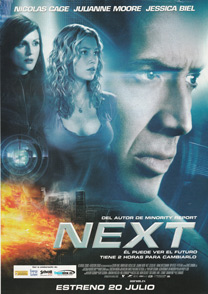

Next
Cris Johnson trabaja en un club de Las Vegas como mago con el sobrenombre de Frank Cadillac, aunque lo que le hace especial con respecto a otros es su capacidad para ver con antelación lo que ocurrirá dos minutos después, aunque solo si le afecta personalmente, don que utiliza para completar sus ingresos jugando al black jack en los casinos, donde no apuesta demasiado para no llamar la atención.
Pero un día, mientras está en el casino, puede ver cómo un hombre realiza un atraco, disparando sobre dos personas, lo que él evita abalanzándose sobre él y quitándole el arma, lo que lo hace sospechoso ante los encargados de la seguridad del casino, que ya habían salido previamente tras él al sospechar que hacía trampas y que lo persiguen por toda la sala, sin que, pese a las cámaras consigan sorprenderlo al anticiparse siempre a sus movimientos, huyendo tras robar un coche, con el que logra también despistar a la policía.
Pero hay una mujer, para la cual la forma de actuar de Johnson no ha pasado desapercibida para la agente del F,B.I. Callie Ferris, que lo ha observado en sus trabajos como mago y que, tras observar los videos de seguridad del casino confirma sus sospechas de que tiene la capacidad de prever el futuro, lo que le parece que puede serles muy útil para poder descubrir a los responsables de la desaparición en Rusia de un artefacto nuclear de 10 kilotones, que piensan está en California.
Pero hay una excepción a su capacidad de anticipar el futuro en dos minutos. Cris lleva un tiempo en el que puede ver a una mujer en un bar, sin saber cuándo será dicho encuentro, pues lo único que ve es que es a las 8:09, por lo que acude cada día al bar a esa hora, tanto por la mañana como por la noche, hasta que por fin un día se cumple su sueño y entra en el bar esa mujer, aunque no encuentra un buen modo para abordarla.
Se lo facilitará el novio de esta Kendall, al que aparentemente ella dejó y que no parece encajarlo, por lo que Cris debe salir a defenderla.
Ella, Elizabeth Cooper, se siente agradecida y por ello se ofrece a llevarlo a Flagstaff, cuando él le explica que le robaron su coche, ya que ella lleva el mismo camino.
Liz, que trabaja como profesora dando clases a niños de diversas tribus indias para al llegar a una de ellas, que vive junto al Gran Cañón, para felicitar a uno de sus alumnos, tras lo que continúan su camino, aunque debido a que la carretera está cortada por inundaciones deben pasar la noche en un hotel en la carretera, aunque para mostrarle su respeto él duerme fuera, ya que solo tienen una cama.
Pero no es solo Callie quien busca a Cris. También los terroristas, enterados de que esta lo busca, van tras sus pasos, temiendo que pueda frustrar sus planes, acabando con el encargado de seguridad del casino tras comprobar que este no puede ayudarles, llegando en su persecución de los agentes hasta el hotel donde se alojan.
En este, Liz acaba por sentirse atraída por él y se acuestan.
Tras ello Liz sale a hacer unas compras siendo abordada por Callie, que tras identificarse le dice que Cris es un sociópata que la utilizó para escapar de la policía, y le piden que les ayude a atraparlo poniéndole una pastilla en el zumo.
Ella, asustada, accede, aunque finalmente se lo cuenta todo a Cris, que le cuenta toda la verdad sobre él y sus habilidades, pidiéndole ayuda para huir.
Sale corriendo mientras Liz provoca un accidente con su coche impidiendo a los agentes seguir a Cris al caer sobre ellos piedras y troncos, pese a lo cual, cuando llega a la carretera encuentra a Callie esperándolo, siendo detenido tras ayudarla a salvarse.
Tampoco a Liz le va mejor, ya que es sorprendida y tomada como rehén por los terroristas.
Cris es llevado a una sala donde lo ponen ante la televisión para que vea el futuro y pueda decirles dónde colocaron los terroristas la bomba.
Y en efecto, puede ver cómo los antidisturbios y las televisiones se congregan ante la terraza de un edificio de Los Ángeles avisados por los terroristas, viendo cómo acaban haciendo explotar sobre dicha terraza a Liz, atada a una silla y cargada de explosivos.
No cuenta nada sin embargo a la policía, y tras conseguir huir gracias a sus habilidades, llega hasta la terraza del edificio, aun vacía, llegando Callie poco después tras él, que le cuenta lo que vio y que ocurrirá en 2 horas.
Callie le ayudará con todas las fuerzas policiales. Él les da la matrícula de la furgoneta donde llevarán a Callie, y una vez localizada esta preparan el dispositivo para detenerla, siendo Cris quien se ponga al mando de las tropas policiales para advertirles de cualquier peligro y guiarles tras subdividirse a sí mismo en decenas de dobles que examinan todas las opciones posibles.
La operación acaba siendo un éxito, y consiguen liberar a Liz tras acabar con sus captores, aunque les queda un objetivo más importante. Descubrir dónde está la bomba, dándose cuenta Cris demasiado tarde de que se han equivocado, que la bomba no se encuentra allí, sino a muchos kilómetros y que va a estallar en esos momentos, sin que pueda hacer ya nada para evitarlo.
Pero justo en ese momento Cris se despierta en la habitación del hotel en que estaba con Liz acostado, y que todo lo soñado aun no ocurrió, descubriendo que con Liz sus capacidades aumentan.
Decide por ello hablar con Callie ofreciéndose a colaborar con la policía a cambio de que dejen a Liz al margen.